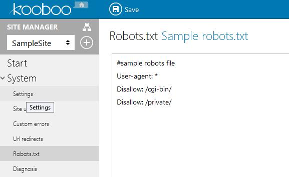

管理站点间的关系，站点可以有子站点，子站点继承父站点的部分配置数据，同时子站点还可以根据需要，本地化由父站点继承而来的数据。通过继承和本地化，可以让子站点在用最小的改动代价，来完成一个与父站点功能类似，但有部分不同的网站。
在创建子站点时，可以选择使用与Kooboo CMS中任何已经存在的站点的相同的内容数据库，也可以选择新建一个新的内容数据库。如果选择新建内容数据库时，新的内容数据库会复制父站点使用的内容数据库，但之后他们各种独立，不再有任何关系。

用于修改站点的配置信息，这些信息可以包括:
（1）基础设置
显示名称
站点名称一旦创建后就不可修改，如果要改变显示名称，通过这个设置来更改。使用的内容数据库
指定要使用的内容数据库。只要保证View和Page中的相关数据查询仍然可以正常工作，开发人员就可以随时改变要修改的内容数据库。使用的会员数据库
指定要使用的会员数据库。Kooboo CMS自带一个基本的会员系统，可以很方便地与站点结合。站点文化设置
设置站点文化，可以根据不同的地区的语言文化设置：日期的显示格式 ，数字的显示模式等与语言文化相关的配置。时区设置
设置站点服务器所在2时区。Kooboo CMS数据库存储的是UTC时间，设置时区会关系到显示的本地时间。是否显示站点管理首页的页面结构图开关
页面结构图可以清晰的表现整个站点内的页面层次关系，但是当页面到达一定数量时，结构图的显示会导致站点运行空间减少和站点性能略为下降，但是你可以选择设置禁用该页面。禁用该页面后，用户登录后会默认重定向页面列表，如果用户没有页面管理权限，则会重定向到内容数据库管理首页。启用版本控制开关
用于控制是否启用站点的版本控制功能。版本控制可以对Layout，View，HtmlBlock，Page进行版本记录和还原操作。
（2）域名设置

域名
绑定站点使用的域名，在绑定站点的域名不需http://，不需要端口号。如果Kooboo CMS站点部署在虚拟目录下，也不需要指定虚拟目录。一个站点可以绑定多个域名。
绑定站点域名，首先要求域名必须加到Kooboo CMS在IIS站点的主机头列表中。站点虚拟目录
有些多语言站点可能会设置类似：www.site.com/cn的站点域名。这种情况的域名设置，需要先把www.site.com绑定到站点域名设置，然后再将cn绑定到站点虚拟目录。使用的设备
Kooboo CMS支持将站点只给指定设备使用，比如做了两个站点，一个绑定给移动端，一个绑定给PC端。换个说法，同一个域名，移动端跟PC端访问可以进入不同站点。SSL反向代理HTTP Header设置
当站点使用HTTPS协议时，反向代理内网走的可能是HTTP协议，此设置用于设置HTTPS协议时的Header标识。
（3）站点资源设置

站点皮肤设置
Kooboo CMS支持一个站点多套皮肤，@Html.FrontHtml().RegisterStyles() 加载的是此配置的主题。站点版本设置
此设置与Release模式时生成的压缩后的脚本、样式的路径有关。Release模式时修改了脚本、样式时版本号也会自动更新。站点运行模式设置
有“Debug”与“Release”两种模式，Debug模式渲染的是原始引用脚本样式，通常用作调试用，线上可以使用Release模式，Release模式会对脚本、样式进行压缩打包。资源域名
用于设置cdn域名，如果设置了cdn域名，在生成静态资源路径时会拼成cdn资源路径。在线编辑开关
设置站点是否要启用在线编辑功能。Kooboo CMS很酷的一个功能，支持前台在线编辑内容，做到想改哪里点哪里。引用JQuery开关
加载jquery到前台站点。
（4）SMTP设置

- SMTP账号相关设置
SMTP账号设置，有需要用到发邮件之类的可以用此配置，比如会员找回密码之类的功能。
（5）HTML META

用于配置页面Meta信息，是SEO人员比较关心的一些配置。可以使用 @Html.FrontHtml().Meta() 加载这些信息。
- HTML标题
- Canonical
- 作者
- 关键字
- 描述
- Meta块
- 定义Meta字段
（6）安全设置
- 密钥
用于站点数据加密/解密的密钥。
（7）自定义字段
- 开发者自定义字段
开发者自己定义的一些信息，比如需要调用第三方API时，可以把API信息配置到这里，使用@Site.Current.CustomFields[“key”]来取数据。
（8）站点用户管理
除了超级管理员之外，只有被添加到站点内的用户才可以维护站点的数据。添加站点用户是选择一个已经在系统中存在的用户，以一种或多种不同的角色添加到站点，让该用户具有维护站点数据的权限。
（9）URL地址重定向
对于某些情况下，开发人员需要将一个旧的URL请求重定向到一个新的页面地址，此时可能需要做301或302重定向。
Url地址重定向配置有两种模式：简单模式和正则表达式模式。
- 简单模式：只是简单的设置一个输入地址和输出地址，配置成功后重定向到新的地址，如：输入/Home，输出/Articles。
- 正则表达式模式：正则表达式模式匹配允许开发人员将输入地址中的部分值替换为新地址的模式串形成一个新的输出地址，如：输入模式串 product/(\d+)，输出模式串Articles/$1。
（10）robots.txt

每个站点都可以有自己的Robots.txt，不会相互影响。
（11） A/B测试
A/B测试用于配置一些规则实现基于某些特定条件展现不同页面。支持规则类型包括
- 浏览器语言
- 随机访问
- 用户IP
- URL的querystring
- 浏览器UserAgent
以下举个例子用于简要介绍该功能的用法,假设我们有这样一个需求：
|
操作步骤如下:
新建个规则，起个名字（比如“mobile”），选择规则类型为“Browser useragent”。点击下一步。
点击加号添加规则项，可以支持多个规则。起个名字（比如“mobile”），正则表达式是用于匹配浏览器UserAgent的，底部有一些常见的规则，可以直接点击使用或者自己编写正则表达式，然后点击“Next”。（本例中点击“Mobiles”项）
完成规则项编辑。点击“Finish”返回即可。
为了便于测试，我们新建两个页面，名字分别叫 A、B
点击左边菜单列表进入“A/B page settings”并点击“Create”新建页面规则。
配置规则页面
测试访问。分别在电脑、手机上访问同一个页面（本例是: 192.168.2.109:8090/a ）